NOTA: Este tutorial asume un conocimiento básico de R.
Hadley Wickham define la gramática de gráficos así:
“A grammar of graphics is a tool that enables us to concisely describe the components of a graphic. Such a grammar allows us to move beyond named graphics (e.g., the ‘scatterplot’) and gain insight into the deep structure that underlies statistical graphics.” Hadley Wickham, 2010..
Básicamente, la idea detrás de ggplot2 es un conjunto de reglas o principios para construir gráficos en forma de capas, en donde cada capa agrega un elemento al gráfico. Por ejemplo, en la siguiente figura se representan los elementos que conforman a un gráfico de dispersión (scatterplot): los datos, representados por los puntos (geom points), la escala y el sistema de coordenadas (ejes, etiquetas de los ejes y las marcas o ticks) y las anotaciones (como título y leyendas de los puntos).
library(IRdisplay)dir_name <-paste0(getwd(), "/img/layers_ggplot.png")display_png(file = dir_name, width =480)display_text('Elementos de un gráfico: objetos geométricos, sistema de coordenadas y anotaciones.')
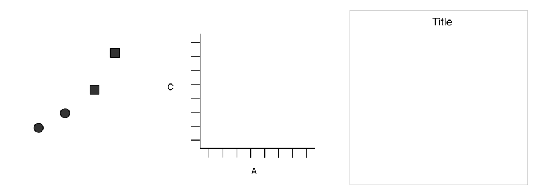
Elementos de un gráfico: objetos geométricos, sistema de coordenadas y anotaciones.
Juntando todos los elementos, tenemos algo como lo siguiente
library(tidyverse) # carga ggplot2, para solo ggplot2 usar library(ggplot2)# graficar el las millas por galón como función del peso de cocheggplot(# datadata = mtcars,mapping =aes(x = wt, y = mpg)) +geom_point()
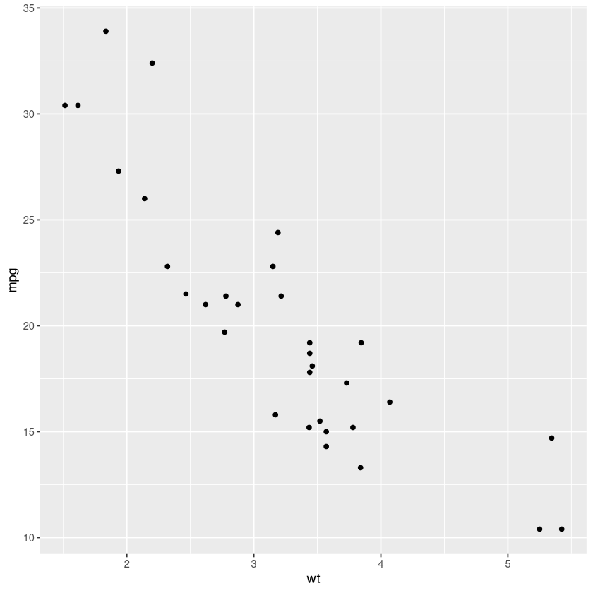
Los argumentos de ggplot son
data define la fuente de información, de cuyas columnas se tomarán las variables que se mapearán.
mapping define cómo las variables son aplicadas al gráfico, en forma de aesthetics (aes) especificando las variables. En el anterior gráfico de dispersión, wt es mapeado al eje x, mpg al eje y, y ambas variables se toman de mtcars.
La última capa, geom_point() especifica qué objeto geométrico (puntos) se usará para representar cada par de valores ordenados \((x, y)\). Dependiendo de las necesidades y el tipo de datos se podrá cambiar esta capa. Por ejemplo, si \(x\) es una variable categórica, un objeto geométrico más apropiado sería el gráfico de caja y bigotes, geom_boxplot()
ggplot(# datadata = mtcars,mapping =aes(x =factor(vs), y = mpg)) +geom_boxplot()
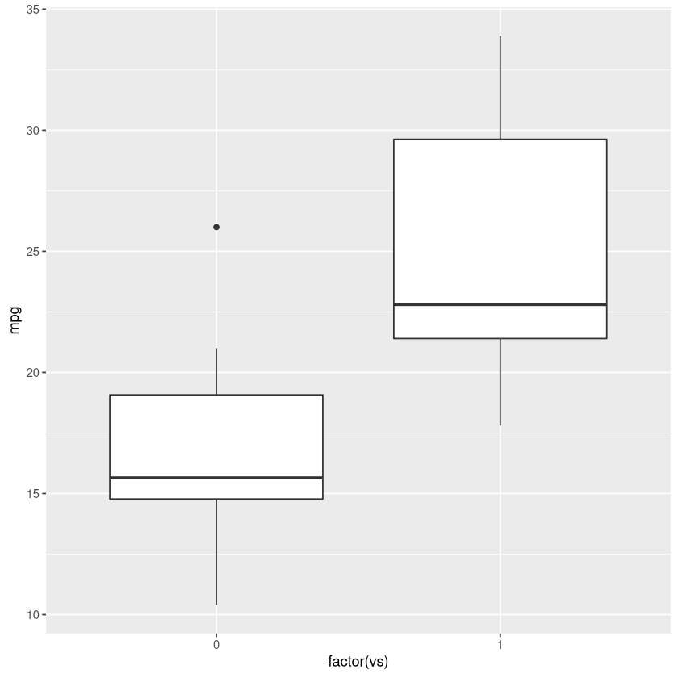
Notar que se usó factor(vs) (donde vs indica si el motor es en V o en línea). Esto es porque en el conjunto original, vs se codificó con 0 si es tipo V o 1 si es en línea. geom_boxplot() espera que x sea o caracter o factor, pero no un valor numérico. Si se deja como valor numérico, grafica solo una caja y lanza un warning diciendo que x es continuo. Una alternativa a declarar el factor es usar un tercer argumento en aes(), aes(x = vs, y = mpg, group = vs), donde group = vs indica que los datos deben agruparse por vs.
ggplot(data = mtcars,mapping =aes(x = vs, y = mpg)) +geom_boxplot()
Warning message:
“Continuous x aesthetic -- did you forget aes(group=...)?”
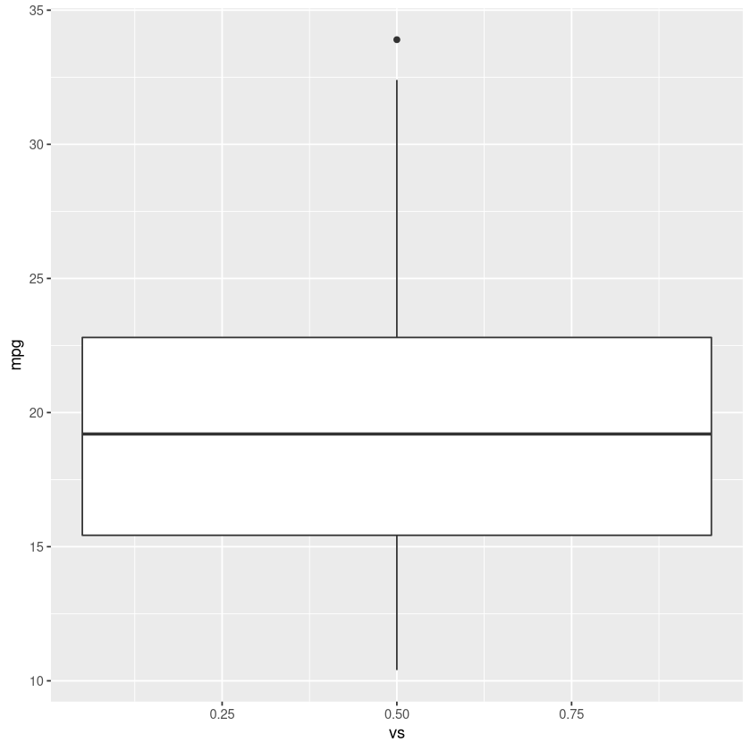
En aes se pueden especificar más argumentos si son variables. Por ejemplo, si queremos que los puntos tengan diferentes colores según una variable en una tercera columna de data podemos asignar esa variable al argumento color:
ggplot( iris,aes(x = Petal.Length, y = Petal.Width, color = Species)) +geom_point()
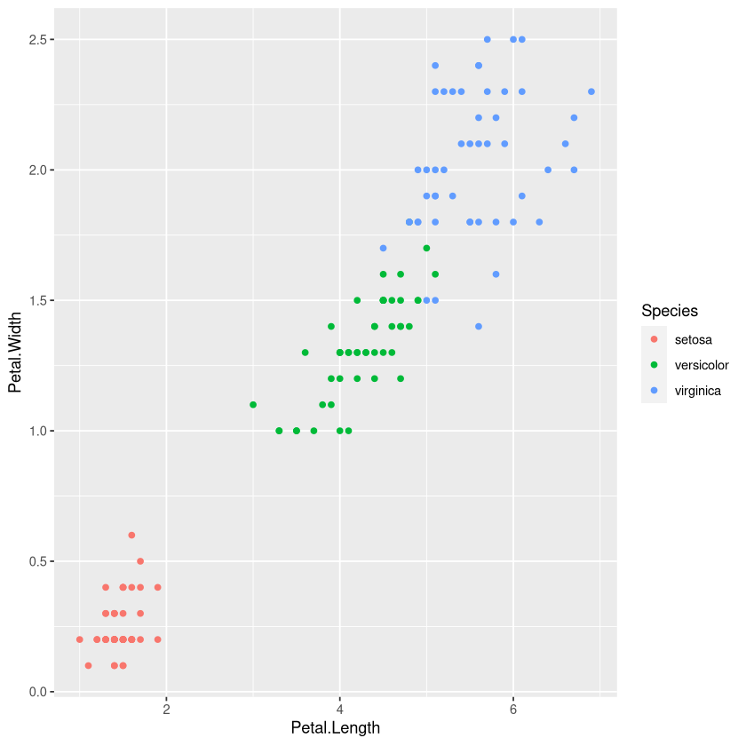
Notar que ahora, dado que el objeto geométrico no es uniforme (varía una característica: el color), se agrega una leyenda para la característica que cambia. Visualizar así los datos resalta características que quizá de otra forma no serían tan evidentes. Por ejemplo, aquí es evidente que los datos se agrupan en tres clústers, uno por cada especie. Esto a su vez puede sugerir qué tipo de análisis debe llevarse a cabo (e.g., kmeans o mezclas gaussianas).
Gráficos básicos: dispersión, caja y bigotes e histogramas
Una guía básica de gráficos según el tipo de datos que se tienen se encuentra en el siguiente link: R Gallery. En esta página muestran cómo usar ggplot para construir los diferentes gráficos de forma sencilla.
Por ejemplo, para una y dos variables numéricas se recomiendan los siguientes gráficos
dir_name <-paste0(getwd(), "/img/plot_data_type.png")display_png(file = dir_name, width =480)display_text("Tipos de gráficos para diferentes variables numéricas. Tomado de R Gallery.")
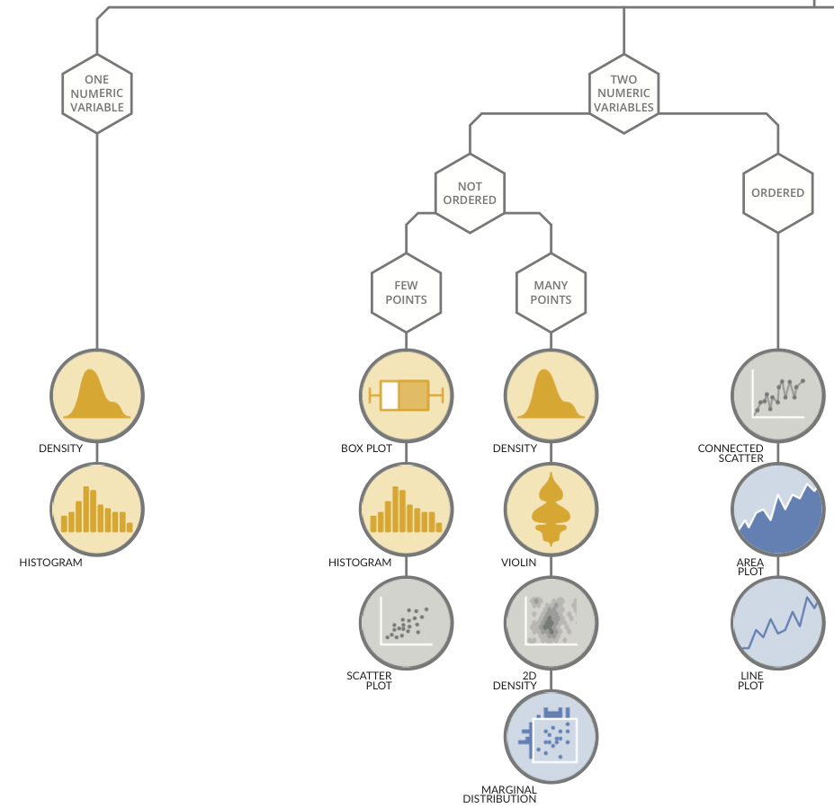
Tipos de gráficos para diferentes variables numéricas. Tomado de R Gallery.
Para ilustrar los diferentes tipos de gráficos, realizaré algunas simulaciones usando las funciones de variables aleatorias de R, como rnorm, rexp, runif etc., (respectivamente, para variables aleatorias normales, exponenciales y uniformes).
Gráfico de dispersión
Para la siguiente simulación usaré el modelo lineal
\[
y = \beta_0 + \beta_1 x + \varepsilon
\]
En donde el ruido $ $ tiene una distribución normal con media en 0 y desviación estándar de 12:
x <-seq(0, 25, len =100) # 100 valores entre 0 y 25epsilon <-rnorm(100, 0, 12)b0 <-5b1 <-2.5y <- b0 + b1 * x + epsilondf_xy <-data.frame(x = x, y = y)ggplot( df_xy,aes(x = x, y = y)) +geom_point()
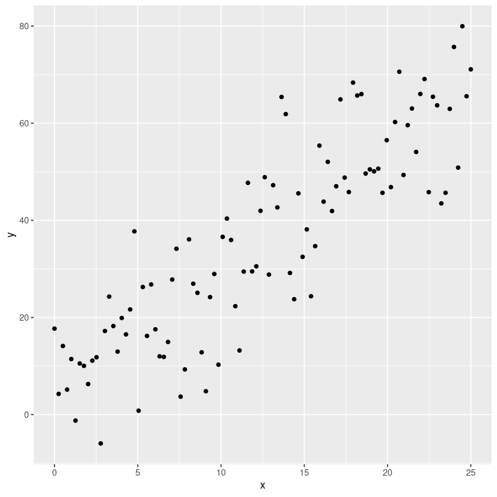
Podemos correr una regresión lineal y agregar como tercera columna los residuos. Como extra, instalamos ggExtra para colocar un histograma marginal en y para enfatizar la distribución de los residuos alrededor del 0.
# install.packages("ggExtra")library(ggExtra)lm1 <-lm(y ~ x, data = df_xy)df_xy$resid <-resid(lm1)p <-ggplot( df_xy,aes(x = x, y = resid)) +geom_point() +geom_hline(yintercept =0, linetype =2)# histograma marginal verticalggMarginal(# gráfico original p,# especificar el tipo; otras opciones son density, boxplot, violin y densigramtype ="histogram",# en eje ymargins ="y",# rellenar de rojofill ='red4')
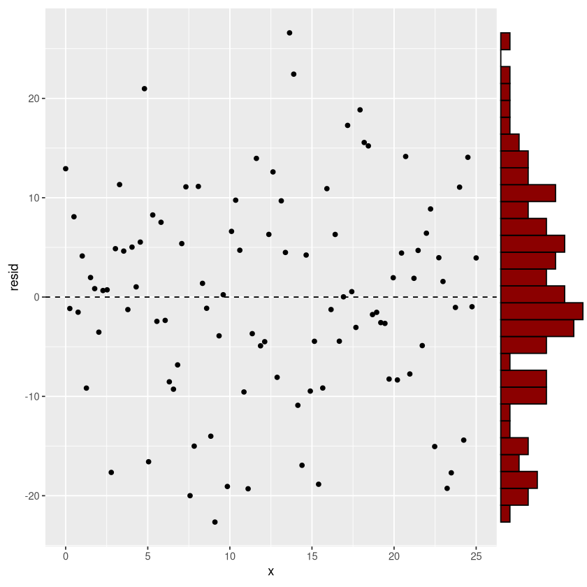
Histogramas
Los histogramas son gráficos de barras donde la amplitud de la barra corresponde a un rango de valores en los que se divide el vector de valores \(x\), y la altura corresponde a la cantidad (o frecuencia) de valores en \(x\) que caen en un rango dado. Si la frecuencia se divide entre el total, se tiene una frecuencia relativa (o probabilidad). Si la frecuencia se divide entre el total multiplicado por el rango del histograma, se obtiene densidad de probabilidad. Por ejemplo, si \(x\) se divide en rangos de 0.5, la densidad sería
`stat_bin()` using `bins = 30`. Pick better value with `binwidth`.
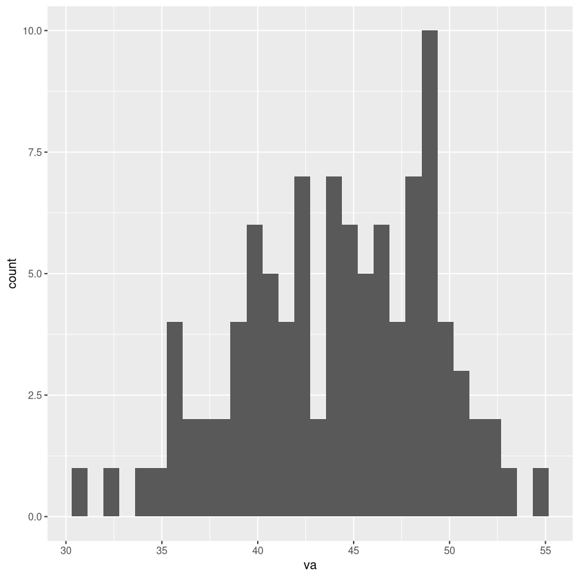
Si tenemos una variable numérica pero dos grupos, podemos intentar ver si existen diferencias agrupando por color. Dato que los histogramas son barras, debemos especificar tanto el color del borde como el del relleno.
# datadatos <-data.frame(va =rnorm(n =100, mean =45, sd =5),# creamos una variable grupo que toma A 50 veces y B 50 vecesgrupo =c(rep("A", 50), rep("B", 50) ))# histogramap <-ggplot( datos,# color según el grupoaes(x = va, color = grupo)) +# relleno blancogeom_histogram(fill ='white')p
`stat_bin()` using `bins = 30`. Pick better value with `binwidth`.
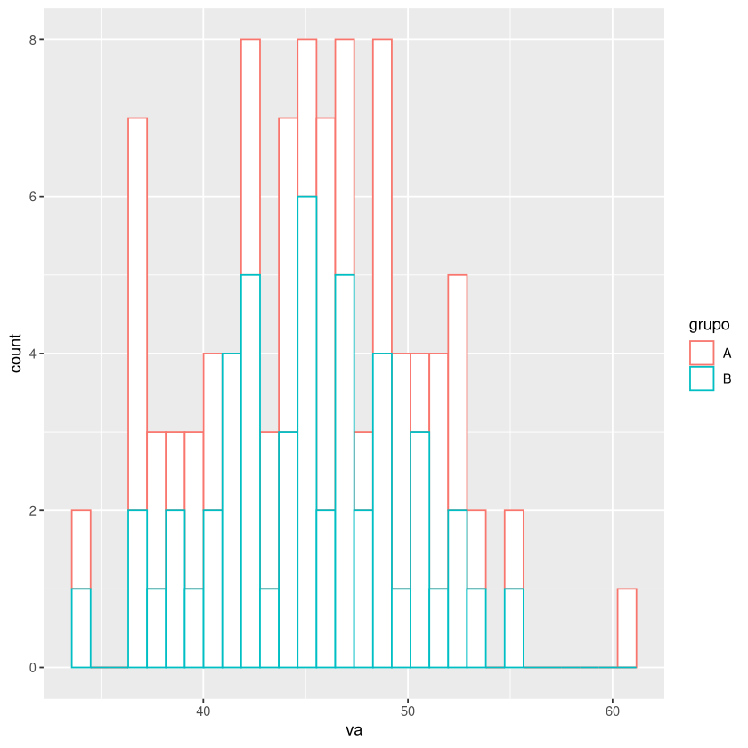
En este gráfico es más o menos claro que no hay diferencias entre ambos grupos. Hagamos otro ejemplo donde, por diseño (simulación) ambos grupos provengan de distribuciones diferentes.
# datadatos <-data.frame(va =c(# 50 valores con media de 45rnorm(n =50, mean =45, sd =5),# 50 valores con media de 60rnorm(n =50, mean =60, sd =5) ),# creamos una variable grupo que toma A 50 veces y B 50 vecesgrupo =c(rep("A", 50), rep("B", 50) ))# histogramap <-ggplot( datos,# color Y relleno según el grupoaes(x = va, color = grupo, fill = grupo)) +# relleno blancogeom_histogram()p
`stat_bin()` using `bins = 30`. Pick better value with `binwidth`.
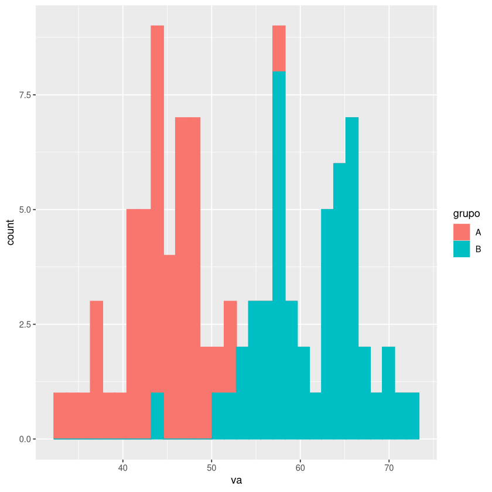
Otra forma legítima de visualizar una variable continua (va) como perteneciente a dos grupos es usando un gráfico de caja y bigotes.
# histogramap <-ggplot( datos,# color Y relleno según el grupoaes(x = grupo,y = va,color = grupo, fill = grupo )) +# relleno blancogeom_boxplot()p
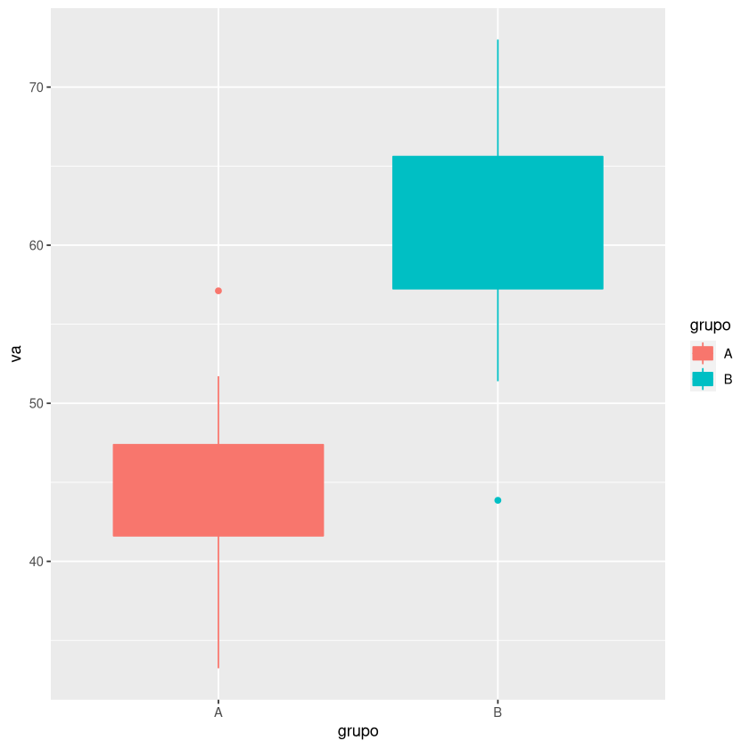
O, incluso mejor en algunos casos, un gráfico de violín, que básicamente es un gráfico de densidad, pero muestra más información que el gráfico de caja y bigotes.
# histogramap <-ggplot( datos,# color Y relleno según el grupoaes(x = grupo,y = va,color = grupo, fill = grupo )) +# relleno blancogeom_violin()p